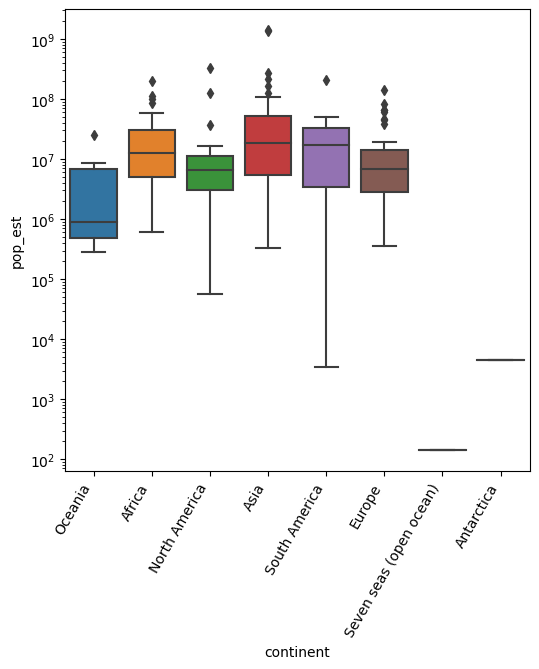
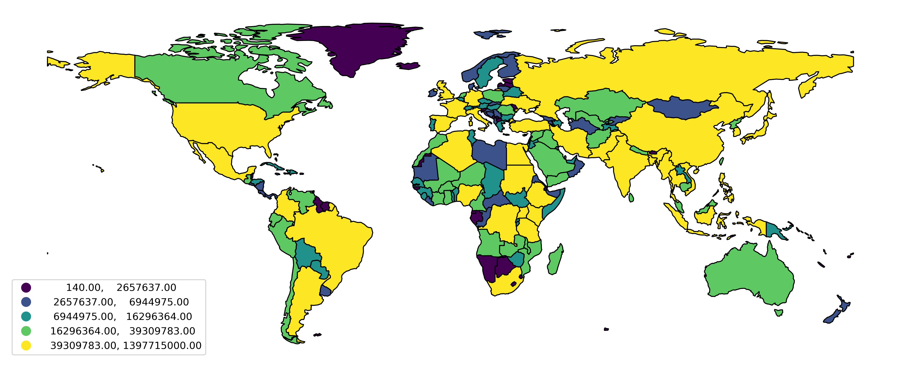
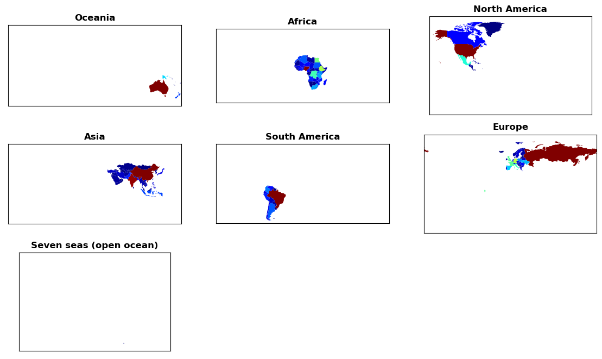
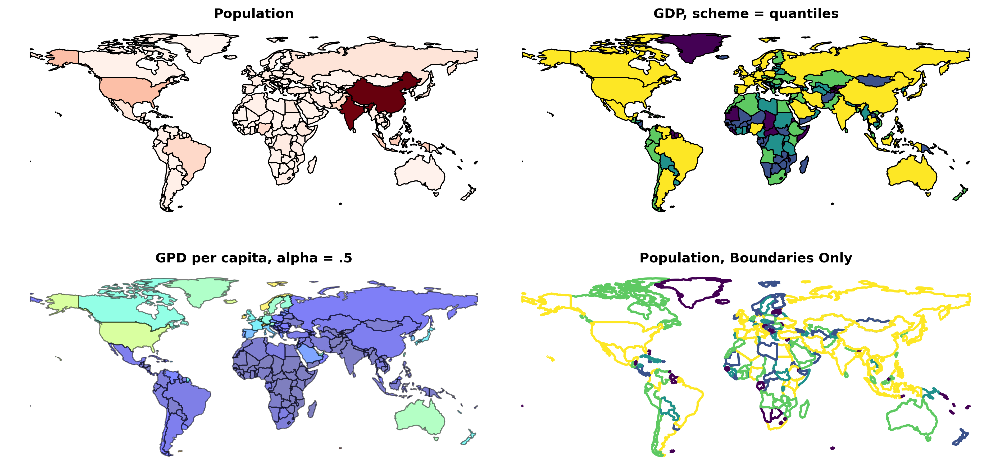
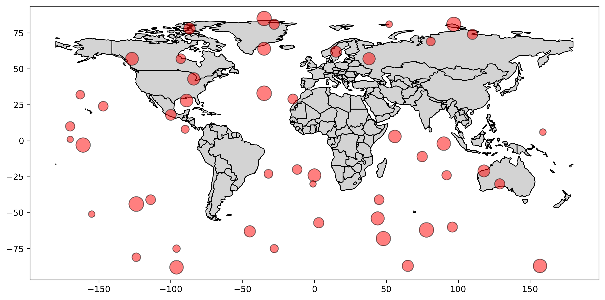
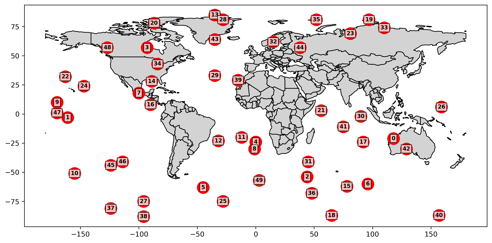
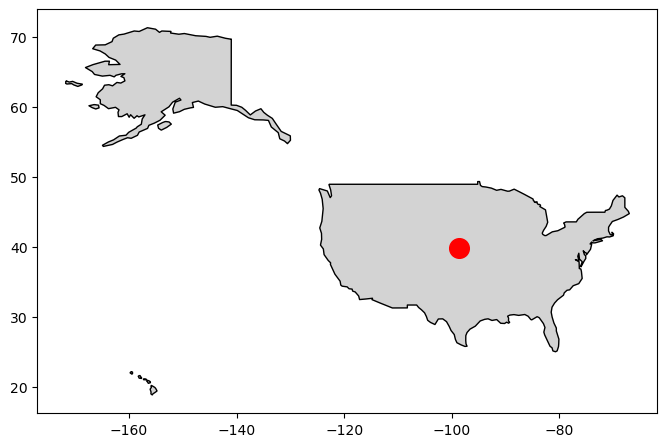
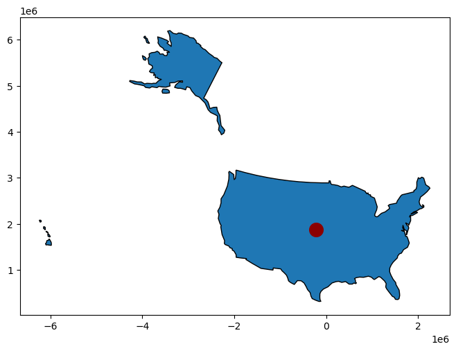
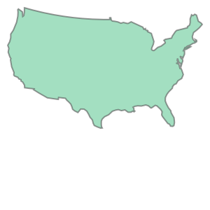

Intro to geopandas: The very basics#
Fundamentals
Basic choropleth plots
Centroids and projections
Points and polygons
Load the library, create and environment if needed#
Load as gpd as below…
As before, may need to create an new environment to use geopandas…
To create a new environment:
#To make a new environment and install packages in the terminal:
#Uncomment if you actually want to do this
#conda create -n my_env
#conda activate my_env
#conda config --env --add channels conda-forge
#conda config --env --set channel_priority strict
#conda install <my_package>
#Now load geopandas plus other standard libraries
#####
import matplotlib.pyplot as plt
import numpy as np
import pandas as pd
import geopandas as gpd
C:\Users\steff\AppData\Local\Temp\ipykernel_32268\2730060491.py:8: UserWarning: Shapely 2.0 is installed, but because PyGEOS is also installed, GeoPandas will still use PyGEOS by default for now. To force to use and test Shapely 2.0, you have to set the environment variable USE_PYGEOS=0. You can do this before starting the Python process, or in your code before importing geopandas:
import os
os.environ['USE_PYGEOS'] = '0'
import geopandas
In a future release, GeoPandas will switch to using Shapely by default. If you are using PyGEOS directly (calling PyGEOS functions on geometries from GeoPandas), this will then stop working and you are encouraged to migrate from PyGEOS to Shapely 2.0 (https://shapely.readthedocs.io/en/latest/migration_pygeos.html).
import geopandas as gpd
Basic geopandas: First let’s load some very basic Natural Earth data#
#First, load the basic data from Natural Earth
#Can get many other local or remote datasets, start with this...
#"gdf" is a common generic variable name = GeoDataFrame
gdf = gpd.read_file(gpd.datasets.get_path('naturalearth_lowres'))
#Note that geopandas has three built-in datasets that you can use to test with
#Check using this command:
display(gpd.datasets.available)
#And now let's display the GeoDataFrame using the head() method
#Many of the same Pandas methods, etc. for DataFrames work with GeoDataFrames
display(gdf.head())
#Could also show the last five
#gdf.tail()
#Or, say, the first 15:
#gdf.head(15)
['naturalearth_cities', 'naturalearth_lowres', 'nybb']
| pop_est | continent | name | iso_a3 | gdp_md_est | geometry | |
|---|---|---|---|---|---|---|
| 0 | 889953.0 | Oceania | Fiji | FJI | 5496 | MULTIPOLYGON (((180.00000 -16.06713, 180.00000... |
| 1 | 58005463.0 | Africa | Tanzania | TZA | 63177 | POLYGON ((33.90371 -0.95000, 34.07262 -1.05982... |
| 2 | 603253.0 | Africa | W. Sahara | ESH | 907 | POLYGON ((-8.66559 27.65643, -8.66512 27.58948... |
| 3 | 37589262.0 | North America | Canada | CAN | 1736425 | MULTIPOLYGON (((-122.84000 49.00000, -122.9742... |
| 4 | 328239523.0 | North America | United States of America | USA | 21433226 | MULTIPOLYGON (((-122.84000 49.00000, -120.0000... |
#And for the most basic of plots...
gdf.plot(figsize=(8,8))
<AxesSubplot: >
#Note that we can use the same pandas plotting stuff as for standard DataFrames:
####
#Do a quick histogram of population:
fig1, ax1 = plt.subplots(1, 1, figsize=(6,4))
gdf['pop_est'].hist(ax = ax1, bins = 50, edgecolor='black', grid=False)
<AxesSubplot: >
#Could also do:
fig1, ax1 = plt.subplots(1, 1, figsize=(6,4))
gdf['pop_est'].plot(ax=ax1, kind='hist', bins = 50, edgecolor='black')
<AxesSubplot: ylabel='Frequency'>
#What are our apparent outliers?
gdf.sort_values(by='pop_est', ascending=False).head(10)
| pop_est | continent | name | iso_a3 | gdp_md_est | geometry | |
|---|---|---|---|---|---|---|
| 139 | 1.397715e+09 | Asia | China | CHN | 14342903 | MULTIPOLYGON (((109.47521 18.19770, 108.65521 ... |
| 98 | 1.366418e+09 | Asia | India | IND | 2868929 | POLYGON ((97.32711 28.26158, 97.40256 27.88254... |
| 4 | 3.282395e+08 | North America | United States of America | USA | 21433226 | MULTIPOLYGON (((-122.84000 49.00000, -120.0000... |
| 8 | 2.706256e+08 | Asia | Indonesia | IDN | 1119190 | MULTIPOLYGON (((141.00021 -2.60015, 141.01706 ... |
| 102 | 2.165653e+08 | Asia | Pakistan | PAK | 278221 | POLYGON ((77.83745 35.49401, 76.87172 34.65354... |
| 29 | 2.110495e+08 | South America | Brazil | BRA | 1839758 | POLYGON ((-53.37366 -33.76838, -53.65054 -33.2... |
| 56 | 2.009636e+08 | Africa | Nigeria | NGA | 448120 | POLYGON ((2.69170 6.25882, 2.74906 7.87073, 2.... |
| 99 | 1.630462e+08 | Asia | Bangladesh | BGD | 302571 | POLYGON ((92.67272 22.04124, 92.65226 21.32405... |
| 18 | 1.443735e+08 | Europe | Russia | RUS | 1699876 | MULTIPOLYGON (((180.00000 71.51571, 180.00000 ... |
| 27 | 1.275755e+08 | North America | Mexico | MEX | 1268870 | POLYGON ((-117.12776 32.53534, -115.99135 32.6... |
Can also do pandas plot methods with geopandas:#
Use kind keyword argument with plot() method. Recall options:
barorbarhfor bar plotshistfor histogramboxfor boxplotkdeordensityfor density plotsareafor area plotsscatterfor scatter plotshexbinfor hexagonal bin plotspiefor pie plots
#For example, a customized boxplot with pandas plotting:
#Population and gpd by continent
#Set up our properties...
boxprops = dict(linewidth = 3, color = 'black')
whiskerprops = dict(linestyle = '-', linewidth=3, color='black')
#boxprops = dict(linewidth = 3, color = 'black')
capprops = dict(linewidth = 3, color = 'black')
flierprops = dict(markersize=10, markeredgewidth=2, markeredgecolor='black', markerfacecolor='blue')
medianprops = dict(linewidth = 3, color = 'red')
#And plot!
##########
fig1, ax1 = plt.subplots(1, 1, figsize=(10,6))
#Do both pop_est and gdp_md_est
ax2, ax3 = gdf.boxplot(column = ["pop_est", "gdp_md_est"], by = "continent", ax = ax1, showmeans=True,
boxprops = boxprops,
whiskerprops = whiskerprops,
capprops = capprops,
flierprops = flierprops,
medianprops = medianprops,
rot = 90, grid=False, fontsize=12);
#Try with vs. without log scale
ax3.set_yscale('log');
C:\Users\steff\AppData\Local\Temp\ipykernel_32268\25320454.py:17: UserWarning: To output multiple subplots, the figure containing the passed axes is being cleared.
ax2, ax3 = gdf.boxplot(column = ["pop_est", "gdp_md_est"], by = "continent", ax = ax1, showmeans=True,
Or with seaborn:#
import seaborn as sns
fig1, ax1 = plt.subplots(1, 1, figsize=(6,6))
sns.boxplot(data=gdf, x='continent', y='pop_est', ax=ax1)
ax1.set_yscale('log');
ax1.set_xticks(ax1.get_xticks(), ax1.get_xticklabels(), rotation=60, ha='right');

Some Basic “Choropleth” Plots!#
#Let's plot with some random counties NaNed
##########
gdf = gpd.read_file(gpd.datasets.get_path('naturalearth_lowres'))
#Exclude Antarctica
gdf = gdf.loc[gdf.continent != 'Antarctica']
#Take 20 countries, set population to nan
#gdf.loc[np.random.choice(gdf.index, 20), 'pop_est'] = np.nan
fig, ax1 = plt.subplots(1,1, figsize=(16, 10), dpi=300)
#Note: scheme + k
#edgecolor: "black", etc. vs. "face"
#missing_kwds, legend, and legend_kwds
gdf.plot(ax=ax1, scheme="quantiles", k = 5, column = 'pop_est', linewidth = 1, edgecolor = 'black',
missing_kwds={"color": "lightgrey", "edgecolor": "red", "hatch": "//////", "label": "Missing values"},
legend = True, legend_kwds={'loc': 'lower left'})
#Set some axis stuff
#ax1.set_xticks([])
#ax1.set_yticks([])
#Or could just:
ax1.set_axis_off();

gdf.total_bounds
array([-180. , -55.61183, 180. , 83.64513])
#Let's plot each continent in its own subfigure
#Have 8 continents, including open ocean
fig, ax1 = plt.subplots(3,3, figsize=(14, 8))
ax1 = ax1.flatten()
#Pythonic iteration though the continents
for i, c in enumerate(gdf.continent.unique()):
#Plot...
gdf.loc[gdf['continent'] == c].plot(ax = ax1[i], column = 'pop_est', cmap = 'jet',
missing_kwds={"color": "lightgrey", "edgecolor": "red", "hatch": "///\\\\\\"})
#Set title
ax1[i].set_title(c, fontweight='bold')
#Let's set x and y lim to the overall gdf bounds
#Unpack:
x1, y1, x2, y2 = gdf.total_bounds
#And set horizontal:
ax1[i].set_xlim([x1, x2])
#Give a little extra vertical:
ax1[i].set_ylim([y1*1.1, y2*1.1])
#Remove the tick markers
ax1[i].set_xticks([])
ax1[i].set_yticks([])
#Could try setting aspect ratio:
#ax1[i].set_aspect(4.0) #'equal')
ax1[7].set_axis_off()
ax1[8].set_axis_off()

#Some more basic choropleth plots
####################
#Reload to remove NaNs:
gdf = gpd.read_file(gpd.datasets.get_path('naturalearth_lowres'))
#Exclude Antarctica
gdf = gdf.loc[gdf.continent!='Antarctica']
#Make a gpd per capita column:
gdf['gpd_per_cap'] = gdf.gdp_md_est / gdf.pop_est
#Do a bunch of figures!
fig, ax1 = plt.subplots(2,2, figsize=(16, 8), dpi=300)
#Population
#####
gdf.plot(ax = ax1[0,0], column = 'pop_est', linewidth = 1, edgecolor = 'black', cmap = 'Reds')
ax1[0,0].set_title('Population', fontweight='bold')
ax1[0,0].set_axis_off();
#GDP
#####
gdf.plot(ax = ax1[0,1], column = 'gdp_md_est', linewidth = 1, edgecolor = 'black', cmap = 'viridis',
scheme='quantiles')
ax1[0,1].set_title('GDP, scheme = quantiles', fontweight='bold')
ax1[0,1].set_axis_off();
#GDP per Capita
#####
gdf.plot(ax = ax1[1,0], column = 'gpd_per_cap', linewidth = 1, edgecolor = 'black', cmap = 'jet', alpha = .5)
ax1[1,0].set_title('GPD per capita, alpha = .5', fontweight='bold')
ax1[1,0].set_axis_off();
#Population, just the Boundaries
#####
gdf.plot(ax = ax1[1,1], facecolor='none', column = 'pop_est', linewidth = 2, cmap = 'viridis',
scheme='quantiles')
ax1[1,1].set_title('Population, Boundaries Only', fontweight='bold')
ax1[1,1].set_axis_off();
#And adjust our subplots to be closer together
plt.subplots_adjust(wspace=0.0, hspace=0.0)

gdf.loc[gdf.continent=='Europe'].plot(figsize=(12,8), column = 'pop_est', linewidth = 1, edgecolor = 'black', cmap = 'viridis',
scheme='quantiles', k=10)
<AxesSubplot: >
gdf.loc[gdf.continent=='North America'].plot(figsize=(12,8), column = 'pop_est', linewidth = 1, edgecolor = 'black', cmap = 'viridis',
scheme='quantiles', k=10)
<AxesSubplot: >
#Note, we don't actually need to create a new column/variable:
#Note also vmax and vmin
#####
gdf.plot(figsize=(12,8), column = gdf.gdp_md_est / gdf.pop_est, linewidth = 1, edgecolor = 'black', cmap = 'viridis',
scheme='quantiles', k=10, vmax=10, vmin=0)
<AxesSubplot: >
#Log scale
###########
gdf.plot(figsize=(20,16), column = np.log(gdf.pop_est), linewidth = 1, edgecolor = 'none', cmap = 'jet')
<AxesSubplot: >
Recall CRS and Centroids#
#Plot each country centroid under different CRS
############################
gdf = gpd.read_file(gpd.datasets.get_path('naturalearth_lowres'))
#Drop Antarctica again:
gdf = gdf.loc[gdf.continent!='Antarctica']
#First, just look at default CRS:
gdf.crs
<Geographic 2D CRS: EPSG:4326>
Name: WGS 84
Axis Info [ellipsoidal]:
- Lat[north]: Geodetic latitude (degree)
- Lon[east]: Geodetic longitude (degree)
Area of Use:
- name: World.
- bounds: (-180.0, -90.0, 180.0, 90.0)
Datum: World Geodetic System 1984 ensemble
- Ellipsoid: WGS 84
- Prime Meridian: Greenwich
#Now plot with centroids...
####
#Try a few different CRS EPSG codes:
#4326 = Geographic 2D, WGS 84 Daturm
#4269 = Geographic 2D, NAD83 Datum
#3857 = Mercator (Cylindrical projection)
#5070 = North American Albers Equal Area (Conic)
#6933 = Equal-Area Cylindrical
#3035 = Lambert Azimuthal Equal Area centered on Europe (Azimuthal/Planar)
#################
#gdf = gdf.to_crs(5070)
#Copy and get centroids:
#################
gdf['centroid_column'] = gdf.centroid
gdf2 = gdf.copy()
#We can set geometry:
gdf2 = gdf2.set_geometry('centroid_column')
fig1, ax1 = plt.subplots(1,1, figsize=(16, 8), dpi=300)
#Try changing scheme:
###
#Plot polygons:
######
gdf.plot(ax = ax1, column = 'pop_est', alpha = .5, linewidth=1, edgecolor = 'black', cmap='Reds', scheme='fisherjenks')
#Plot centroids:
#######
gdf2.plot(ax = ax1, column = 'pop_est', markersize = gdf2.pop_est / 3e5,
alpha = .7, edgecolor = 'black', cmap='Reds', scheme='fisherjenks');
C:\Users\steff\AppData\Local\Temp\ipykernel_32268\1510840885.py:17: UserWarning: Geometry is in a geographic CRS. Results from 'centroid' are likely incorrect. Use 'GeoSeries.to_crs()' to re-project geometries to a projected CRS before this operation.
gdf['centroid_column'] = gdf.centroid
#For 5070, filter to just North America
#########
gdf_na = gdf.loc[gdf.continent == 'North America']
gdf_na = gdf_na.to_crs(5070)
gdf_na['centroid_column'] = gdf_na.centroid
display(gdf_na.crs)
#And plot:
#Plot polygons:
######
fig1, ax1 = plt.subplots(1,1, figsize=(8, 8), dpi=300)
gdf_na.plot(ax = ax1, column = 'pop_est', alpha = .5, linewidth=1, edgecolor = 'black', cmap='jet', scheme='fisherjenks')
#Plot centroids:
#######
gdf_na= gdf_na.set_geometry('centroid_column')
gdf_na.plot(ax = ax1, column = 'pop_est', markersize = gdf_na.pop_est / 2e5, alpha = .75, edgecolor = 'black', cmap='jet', scheme='fisherjenks');
<Derived Projected CRS: EPSG:5070>
Name: NAD83 / Conus Albers
Axis Info [cartesian]:
- X[east]: Easting (metre)
- Y[north]: Northing (metre)
Area of Use:
- name: United States (USA) - CONUS onshore - Alabama; Arizona; Arkansas; California; Colorado; Connecticut; Delaware; Florida; Georgia; Idaho; Illinois; Indiana; Iowa; Kansas; Kentucky; Louisiana; Maine; Maryland; Massachusetts; Michigan; Minnesota; Mississippi; Missouri; Montana; Nebraska; Nevada; New Hampshire; New Jersey; New Mexico; New York; North Carolina; North Dakota; Ohio; Oklahoma; Oregon; Pennsylvania; Rhode Island; South Carolina; South Dakota; Tennessee; Texas; Utah; Vermont; Virginia; Washington; West Virginia; Wisconsin; Wyoming.
- bounds: (-124.79, 24.41, -66.91, 49.38)
Coordinate Operation:
- name: Conus Albers
- method: Albers Equal Area
Datum: North American Datum 1983
- Ellipsoid: GRS 1980
- Prime Meridian: Greenwich
gdf_na
| pop_est | continent | name | iso_a3 | gdp_md_est | geometry | centroid_column | |
|---|---|---|---|---|---|---|---|
| 3 | 37589262.0 | North America | Canada | CAN | 1736425 | MULTIPOLYGON (((-1962161.370 3167162.825, -197... | POINT (-52612.028 4027401.125) |
| 4 | 328239523.0 | North America | United States of America | USA | 21433226 | MULTIPOLYGON (((-1962161.370 3167162.825, -175... | POINT (-695248.110 2428086.199) |
| 16 | 11263077.0 | North America | Haiti | HTI | 14332 | POLYGON ((2599686.623 -20735.583, 2623645.093 ... | POINT (2521426.968 -130454.514) |
| 17 | 10738958.0 | North America | Dominican Rep. | DOM | 88941 | POLYGON ((2645213.400 -193211.750, 2640081.798... | POINT (2753876.447 -70939.400) |
| 19 | 389482.0 | North America | Bahamas | BHS | 13578 | MULTIPOLYGON (((1694883.783 566750.173, 173955... | POINT (1824998.091 447876.674) |
| 22 | 56225.0 | North America | Greenland | GRL | 3051 | POLYGON ((2069937.291 6297690.102, 2185915.338... | POINT (2561115.782 5937257.834) |
| 27 | 127575529.0 | North America | Mexico | MEX | 1268870 | POLYGON ((-1957421.540 1269943.080, -1851945.2... | POINT (-634805.296 132619.458) |
| 33 | 4246439.0 | North America | Panama | PAN | 66800 | POLYGON ((2229538.892 -1287783.805, 2218076.28... | POINT (1905549.784 -1359972.602) |
| 34 | 5047561.0 | North America | Costa Rica | CRI | 61801 | POLYGON ((1600790.629 -1302874.019, 1556319.63... | POINT (1403440.356 -1287748.656) |
| 35 | 6545502.0 | North America | Nicaragua | NIC | 12520 | POLYGON ((1451405.902 -1181788.248, 1426166.09... | POINT (1268702.838 -1005438.639) |
| 36 | 9746117.0 | North America | Honduras | HND | 25095 | POLYGON ((1454080.299 -756870.502, 1415247.555... | POINT (1067338.890 -819516.847) |
| 37 | 6453553.0 | North America | El Salvador | SLV | 27022 | POLYGON ((757827.665 -888701.806, 792024.277 -... | POINT (818067.773 -957142.541) |
| 38 | 16604026.0 | North America | Guatemala | GTM | 76710 | POLYGON ((429858.907 -894685.573, 431433.529 -... | POINT (633750.859 -762476.303) |
| 39 | 390353.0 | North America | Belize | BLZ | 1879 | POLYGON ((756029.447 -531033.029, 754040.680 -... | POINT (809245.827 -592208.708) |
| 45 | 3193694.0 | North America | Puerto Rico | PRI | 104988 | POLYGON ((3203107.915 21858.507, 3259284.205 3... | POINT (3191578.051 -12789.915) |
| 46 | 2948279.0 | North America | Jamaica | JAM | 16458 | POLYGON ((2007133.556 -290425.151, 2081360.649... | POINT (2040888.888 -321917.704) |
| 47 | 11333483.0 | North America | Cuba | CUB | 100023 | POLYGON ((1426744.926 123762.263, 1516984.189 ... | POINT (1800419.326 17416.042) |
| 175 | 1394973.0 | North America | Trinidad and Tobago | TTO | 24269 | POLYGON ((3965670.777 -570548.469, 4024342.478... | POINT (4016322.504 -587538.187) |
gdf_na.crs
<Derived Projected CRS: EPSG:5070>
Name: NAD83 / Conus Albers
Axis Info [cartesian]:
- X[east]: Easting (metre)
- Y[north]: Northing (metre)
Area of Use:
- name: United States (USA) - CONUS onshore - Alabama; Arizona; Arkansas; California; Colorado; Connecticut; Delaware; Florida; Georgia; Idaho; Illinois; Indiana; Iowa; Kansas; Kentucky; Louisiana; Maine; Maryland; Massachusetts; Michigan; Minnesota; Mississippi; Missouri; Montana; Nebraska; Nevada; New Hampshire; New Jersey; New Mexico; New York; North Carolina; North Dakota; Ohio; Oklahoma; Oregon; Pennsylvania; Rhode Island; South Carolina; South Dakota; Tennessee; Texas; Utah; Vermont; Virginia; Washington; West Virginia; Wisconsin; Wyoming.
- bounds: (-124.79, 24.41, -66.91, 49.38)
Coordinate Operation:
- name: Conus Albers
- method: Albers Equal Area
Datum: North American Datum 1983
- Ellipsoid: GRS 1980
- Prime Meridian: Greenwich
Let’s add some cities#
Now we’ll have a point geometry
#Get world borders again
world = gpd.read_file(gpd.datasets.get_path('naturalearth_lowres'))
#Now, get the cities!
cities = gpd.read_file(gpd.datasets.get_path('naturalearth_cities'))
#Get rid of Antarctica
world = world.loc[world.continent!='Antarctica']
#Confirm same CRS
display(world.crs)
display(cities.crs)
#See what cities is:
display(cities.head())
#Plot the cities and country borders
######
fig, ax1 = plt.subplots(1,1, figsize=(20, 10))
#Country backgrounds
world.plot(ax = ax1, facecolor = 'lightgrey', edgecolor='black', alpha=.75) #, zorder=2)
#Cities
#Note: Try changing the zorder for both plots
cities.plot(ax = ax1, markersize = 350, facecolor='blue', edgecolor='black',
alpha=.7, zorder=0) #, zorder=1);
<Geographic 2D CRS: EPSG:4326>
Name: WGS 84
Axis Info [ellipsoidal]:
- Lat[north]: Geodetic latitude (degree)
- Lon[east]: Geodetic longitude (degree)
Area of Use:
- name: World.
- bounds: (-180.0, -90.0, 180.0, 90.0)
Datum: World Geodetic System 1984 ensemble
- Ellipsoid: WGS 84
- Prime Meridian: Greenwich
<Geographic 2D CRS: EPSG:4326>
Name: WGS 84
Axis Info [ellipsoidal]:
- Lat[north]: Geodetic latitude (degree)
- Lon[east]: Geodetic longitude (degree)
Area of Use:
- name: World.
- bounds: (-180.0, -90.0, 180.0, 90.0)
Datum: World Geodetic System 1984 ensemble
- Ellipsoid: WGS 84
- Prime Meridian: Greenwich
| name | geometry | |
|---|---|---|
| 0 | Vatican City | POINT (12.45339 41.90328) |
| 1 | San Marino | POINT (12.44177 43.93610) |
| 2 | Vaduz | POINT (9.51667 47.13372) |
| 3 | Lobamba | POINT (31.20000 -26.46667) |
| 4 | Luxembourg | POINT (6.13000 49.61166) |
<AxesSubplot: >
Make your own points/GeoDataFrame#
Create a random DataFrame of Points:
#Make a GeoDataFrame of N random points:
N = 50
df = pd.DataFrame(
{'Name': [str(k) for k in (list(range(0, N)))],
'Latitude': np.random.randint(-89, 89, N),
'Longitude': np.random.randint(-180, 180, N),
'Value': np.random.uniform(50, 300, N)})
df.head()
| Name | Latitude | Longitude | Value | |
|---|---|---|---|---|
| 0 | 0 | -21 | 118 | 201.422573 |
| 1 | 1 | -3 | -161 | 286.127885 |
| 2 | 2 | -54 | 44 | 241.913813 |
| 3 | 3 | 57 | -93 | 130.584765 |
| 4 | 4 | -24 | 0 | 231.295958 |
#Make a GeoDataFrame of N random points:
#Create the GeoDataFrame
#Always start with EPSG 4326 (or 4269):
gdf_point = gpd.GeoDataFrame(df[['Name', 'Value', 'Latitude', 'Longitude']],
geometry = gpd.points_from_xy(df.Longitude, df.Latitude), crs = "EPSG:4326")
display(gdf_point.head())
| Name | Value | Latitude | Longitude | geometry | |
|---|---|---|---|---|---|
| 0 | 0 | 201.422573 | -21 | 118 | POINT (118.00000 -21.00000) |
| 1 | 1 | 286.127885 | -3 | -161 | POINT (-161.00000 -3.00000) |
| 2 | 2 | 241.913813 | -54 | 44 | POINT (44.00000 -54.00000) |
| 3 | 3 | 130.584765 | 57 | -93 | POINT (-93.00000 57.00000) |
| 4 | 4 | 231.295958 | -24 | 0 | POINT (0.00000 -24.00000) |
#And plot:
#########
fig, ax1 = plt.subplots(1,1, figsize=(12, 8), dpi=300)
world.plot(ax = ax1, facecolor = 'lightgrey', edgecolor='black')
gdf_point.plot(ax = ax1, markersize = 'Value', color='red', edgecolor='black', alpha=.5);

### Add Text:
########
#Get our base plot:
fig, ax1 = plt.subplots(1,1, figsize=(12, 8), dpi=300)
world.plot(ax = ax1, facecolor = 'lightgrey', edgecolor='black')
gdf_point.plot(ax = ax1, markersize = 300, color='red');
#What if we didn't have Latitude/Longitude columns?
#######
for i, p in enumerate(gdf_point.geometry):
#Observe:
#print(p.coords.xy[0][0])
#Or just:
#print(p.x)
#Plot:
text_str = gdf_point.iloc[i].Name
ax1.text(p.x, p.y, text_str, fontsize=8, fontweight='bold', color='black',
bbox={'facecolor':'white','alpha':.75,'edgecolor':'black','pad':2},
ha='center', va='center')

#Make a GeoDataFrame with just a single point at ostensible geographic center of the contiguous US
####39°50′N 98°35
df = pd.DataFrame(
{'Description': ['Geographic Center'],
'Latitude': [39 + 50/60],
'Longitude': [-(98 + 35/60)]})
gdf_center = gpd.GeoDataFrame(df, geometry = gpd.points_from_xy(df.Longitude, df.Latitude), crs = "EPSG:4326")
fig, ax1 = plt.subplots(1,1, figsize=(8, 6))
world.loc[world['iso_a3'] == 'USA'].plot(ax = ax1, facecolor = 'lightgrey', edgecolor='black')
gdf_center.plot(ax = ax1, markersize = 200, color='red');

#And plot in N. Am. Albers:
########
usa_map = world.loc[world['iso_a3'] == 'USA']
#Convert to North American Albers:
usa_map = usa_map.to_crs(5070)
#Convert Centroid:
gdf_center = gdf_center.to_crs(5070)
fig, ax1 = plt.subplots(1,1, figsize=(8, 6))
usa_map.plot(ax = ax1, edgecolor='black')
gdf_center.plot(ax = ax1, markersize = 200, color='darkred');

Make and plot polygon geometries…#
###Let's calculate and visualize the land area needed to generate all US electricity from Solar
#############
#Do everything in kWh
#Approx 2021 US electricity:
US_electricity = 4.116e12
#Solar irradiance, in kWh m-2 over the year, averaged over US
S = 1800
#Our solar efficiency, and a performance factor
E = .18
PF = .75
#Energy over the year for a single square meter:
E_m2 = S * E * PF
#And now, required square meters:
m2_needed = US_electricity / E_m2
#In square miles:
sqmile_needed = m2_needed * 3.86102e-7
sqmile_needed
6539.900543209877
#Is this a lot?
#Various areas in square miles:
######
Lower48_area = 3.1199e6
US_area = 3.797e6
Maricopa_area = 9223
sqmile_needed / US_area
0.0017223862373478738
#And let's make a polygon...
#Get a shapely Polygon
from shapely.geometry import Polygon
#Just make a square with the area of m2_needed
val = np.sqrt(m2_needed)
#Use "geographic center" for base x/y
x_base = gdf_center.geometry[0].x - val/2 #-1.5e6
y_base = gdf_center.geometry[0].y - val/2 #1.5e6
#And make our polygon:
#####
lon_list = [x_base, x_base+val, x_base+val, x_base]
lat_list = [y_base, y_base, y_base+val, y_base+val]
polygon_geom = Polygon(zip(lon_list, lat_list))
#And put into a GeoDataFrame:
crs = {'init': 'epsg:5070'} #Can just use 5070 also
solar_rect = gpd.GeoDataFrame(index=[0], crs=crs, geometry=[polygon_geom])
#Plot...
fig, ax1 = plt.subplots(1,1, figsize=(8, 8), dpi=300)
usa_map.plot(ax = ax1, facecolor = 'lightgrey', edgecolor='black')
solar_rect.plot(ax = ax1, facecolor = 'red', edgecolor='black')
C:\Users\steff\Anaconda3\envs\geo_env\lib\site-packages\pyproj\crs\crs.py:141: FutureWarning: '+init=<authority>:<code>' syntax is deprecated. '<authority>:<code>' is the preferred initialization method. When making the change, be mindful of axis order changes: https://pyproj4.github.io/pyproj/stable/gotchas.html#axis-order-changes-in-proj-6
in_crs_string = _prepare_from_proj_string(in_crs_string)
<AxesSubplot: >
#What does our GeoDataFrame look like?
solar_rect
| geometry | |
|---|---|
| 0 | POLYGON ((-284162.691 1806207.058, -154015.576... |
#Area for solar as fraction of US area?
###########
solar_rect.area.values[0] / usa_map.area.values[0]
0.0017810230604964358
#Get the areas of the polygons that make up the multipolygon?
polys = usa_map.geometry.explode()
polys
C:\Users\steff\AppData\Local\Temp\ipykernel_32268\706844601.py:2: FutureWarning: Currently, index_parts defaults to True, but in the future, it will default to False to be consistent with Pandas. Use `index_parts=True` to keep the current behavior and True/False to silence the warning.
polys = usa_map.geometry.explode()
4 0 POLYGON ((-1962161.370 3167162.825, -1759244.7...
1 POLYGON ((-5994579.739 1621439.289, -5984478.4...
2 POLYGON ((-6002902.016 1718460.300, -6017763.5...
3 POLYGON ((-6042036.927 1802608.920, -6051657.0...
4 POLYGON ((-6114401.729 1930232.663, -6111577.2...
5 POLYGON ((-6193278.678 2059630.455, -6207172.8...
6 POLYGON ((-3942083.583 5624680.128, -3912081.0...
7 POLYGON ((-3445165.527 4916819.652, -3413967.0...
8 POLYGON ((-2268903.691 5499339.016, -2268904.2...
9 POLYGON ((-3937165.872 6081290.121, -3924949.6...
Name: geometry, dtype: geometry
#The first is CONUS:
polys.iloc[0]

#Note, if you want the coords:
list(polys.iloc[0].exterior.coords)
[(-1962161.3702512002, 3167162.8253698274),
(-1759244.7090589108, 3111553.2812018204),
(-1545449.6330413173, 3059930.61815036),
(-1474314.709586353, 3044312.18363005),
(-1252770.483023552, 3000572.8999905614),
(-1037133.5987980213, 2965028.692290655),
(-816816.1897191196, 2935763.8813647977),
(-595559.4239206862, 2913440.4502210645),
(-344366.35286531027, 2896648.6669438877),
(-91028.37163248812, 2888887.159950868),
(62301.831000003694, 2888497.2179712243),
(62147.38396207218, 2930667.6015315508),
(87068.35232383838, 2931459.6548542823),
(101006.71912840151, 2871364.440293248),
(124418.75843760684, 2853125.822644014),
(176573.7886802904, 2847470.3865310536),
(253257.45300077528, 2832260.9967512945),
(327245.01461478753, 2801104.8235037685),
(387207.16933892755, 2818455.9851389676),
(481130.7062799805, 2795471.349114236),
(505602.3432948148, 2798248.833605114),
(570219.6059053084, 2834425.8915207386),
(643838.0438532329, 2800561.163444683),
(721422.9436960664, 2765099.265672206),
(786428.3534551765, 2734908.200943919),
(849302.778833168, 2706395.2936531566),
(860092.710574457, 2678344.351369029),
(879368.0740272958, 2669671.988981),
(876010.4580188135, 2658204.4898509462),
(896944.5076263376, 2657313.7515170607),
(910403.92852568, 2670543.967616187),
(917524.6569041987, 2644978.2032167),
(935169.3937639846, 2629496.750178407),
(956259.81054559, 2632229.652571161),
(969296.6790022642, 2620265.288222991),
(962383.1020899815, 2599443.0229957663),
(1050039.1545406047, 2558800.1457565483),
(1081039.2313449422, 2461205.521876811),
(1110846.1384718216, 2367631.6791842305),
(1096971.8304474012, 2298920.559685891),
(1067669.4486708764, 2232704.721197529),
(1055138.5526097198, 2191473.1710527563),
(1054921.380452739, 2179666.832754751),
(1066243.8202757041, 2165081.0571867456),
(1096454.2337480504, 2151470.159307652),
(1116976.7728265573, 2154390.9936997006),
(1202698.370201888, 2227637.604647981),
(1283219.6762079608, 2258463.6517575826),
(1378747.5487217123, 2331556.786252367),
(1378270.4600091216, 2342983.0693932096),
(1365027.8154898717, 2375203.659404089),
(1348313.8914044409, 2394469.690380144),
(1380882.1751514468, 2418384.9849974783),
(1458361.9658945145, 2433495.263042491),
(1530691.564299216, 2447900.086523778),
(1547018.8471339704, 2495654.839144193),
(1555014.839196786, 2506192.406670005),
(1620136.097533703, 2602283.2418724773),
(1650386.739111339, 2630036.6236841725),
(1766667.4044223127, 2658096.699436524),
(1907290.4233484124, 2693806.7474333197),
(1907880.8394221975, 2722359.383749529),
(1930701.9169211322, 2734224.051560079),
(1958310.9896101505, 2759523.88585523),
(1971578.6620630845, 2815597.3125913846),
(1971087.0259121298, 2905037.669262234),
(2004194.3463309093, 3001291.0156156505),
(2036569.8668486348, 2980463.22869681),
(2080138.4783117266, 3012990.2096694787),
(2121757.429716026, 2992276.1089703864),
(2165909.473363354, 2847694.8471634067),
(2233376.9260382843, 2802803.511785382),
(2257301.174934605, 2772082.0021861847),
(2192394.3260581214, 2695523.335982741),
(2124825.7963073896, 2635295.45341839),
(2052517.6578377364, 2580334.61500408),
(2029034.2831178883, 2505068.9979390698),
(2022378.4627556414, 2477212.1007709373),
(2037105.1843521802, 2419790.0015011425),
(2078887.9678691812, 2369749.2073171968),
(2112631.7828546544, 2376205.6610815427),
(2093330.025803339, 2413210.391770266),
(2123791.037816387, 2395937.6151934555),
(2126091.380942096, 2363380.487942149),
(2077089.9971450253, 2330963.835979128),
(2038092.694692345, 2322664.0927712065),
(1983741.5174993041, 2288132.639554308),
(1950127.8926859817, 2273708.488683062),
(1904586.6682338591, 2256558.6269738334),
(1844751.712074671, 2208616.235554483),
(1958625.6831873362, 2258484.8786152913),
(1987841.4065113019, 2244087.6455218834),
(1882352.8591841282, 2182990.8124207407),
(1830441.951203596, 2170329.541240083),
(1829703.5251288333, 2184281.2444681074),
(1811931.579527464, 2148217.114969529),
(1837196.963055805, 2148863.170308624),
(1837833.7294704786, 2066333.4304693395),
(1796567.9937833431, 1968342.4989405312),
(1784021.9189797265, 1995027.1579641823),
(1764416.1599073943, 1996620.1197672065),
(1731035.0497745958, 2017953.1953704408),
(1761379.675130223, 1962831.4596141882),
(1786533.575101855, 1947992.6646341875),
(1797061.3130711655, 1906942.1470349052),
(1779354.420568494, 1858387.127720829),
(1750284.43463452, 1760475.0243196632),
(1741530.2650569265, 1763154.064149323),
(1751942.1477049086, 1843394.0526727424),
(1699610.6097384575, 1876005.4039165592),
(1670566.969880367, 1965051.51948696),
(1664266.0932237564, 1914229.2142569493),
(1696871.0579375569, 1848401.9197680748),
(1637164.2267420487, 1854017.6568979463),
(1703040.2767956483, 1830764.7531173527),
(1728686.2917862823, 1727190.0226618217),
(1755063.0810150255, 1724871.4691155695),
(1772170.3089715955, 1688894.5336586484),
(1808075.7985763396, 1582021.41261692),
(1769241.9486672217, 1488825.1085283768),
(1683717.248307338, 1437534.7326451698),
(1637251.946718713, 1361689.2510012384),
(1593517.9346840007, 1346157.1996983471),
(1555044.6688354504, 1297399.0596953235),
(1548651.4457776158, 1258186.9467627222),
(1460300.1243782714, 1169447.94116383),
(1416736.2094655093, 1108546.2940833373),
(1383121.580909412, 1036394.6967316999),
(1380716.1524889048, 956056.0724054346),
(1409270.659806251, 882427.270771329),
(1455957.891333312, 793761.3684431688),
(1511352.5717110827, 723370.2737727441),
(1519632.3413928142, 676339.6980479431),
(1587067.7726526738, 557918.4275585766),
(1596320.6540945584, 484285.1506803474),
(1599091.106356917, 441440.9527247731),
(1585131.817711944, 371243.3150881501),
(1557273.068732894, 352669.923578951),
(1505598.5205167118, 357848.9566704863),
(1482304.0717384238, 402869.1966373688),
(1440421.4338256172, 421965.34587057057),
(1373743.2645116257, 507595.179574272),
(1315862.3897397118, 584432.3659530238),
(1295149.564552396, 625115.616538556),
(1304973.2657337338, 700550.5940726483),
(1269433.2645727424, 757035.2212015291),
(1182191.947520575, 838887.1769225844),
(1142712.2095336965, 851001.9058105175),
(1052040.5670877856, 789364.7580005802),
(1034198.6275139682, 792904.9991114667),
(981975.8460512467, 839201.543735869),
(919223.1097153258, 860251.7170031212),
(812536.6878451281, 836058.6007081899),
(726610.7662672211, 841108.1219800207),
(654204.3599699873, 827934.5104775291),
(615780.5874095608, 807895.553545321),
(635107.3100234325, 779651.18236329),
(636647.9365477177, 734677.2791246114),
(658749.8373741424, 714285.702006282),
(641280.627434412, 698455.2725197416),
(604167.183316932, 712329.369626012),
(569051.6180866455, 689041.0963065786),
(498302.0498772403, 688405.6650442906),
(423002.20518000715, 743279.2724809416),
(339183.30657841597, 725967.107344404),
(267992.70245443913, 749294.8567086547),
(208077.0851944143, 739962.3741399416),
(127052.8796093935, 712579.9911674488),
(39116.38080350963, 629687.1871526614),
(-58426.04855337957, 582112.0606397318),
(-112754.21579502954, 529870.0507188218),
(-136217.0411491866, 480537.89156293933),
(-138314.40627155968, 404571.66491704533),
(-134041.5372329825, 351734.7548686321),
(-115341.17624992668, 314156.2232093805),
(-154850.63159003816, 311418.62373271),
(-226130.03794679188, 336986.63489187777),
(-303766.97955200117, 373205.21269756835),
(-330125.11744623876, 425805.5157311295),
(-349268.0748144659, 503666.53065924626),
(-405056.5147732113, 568870.4082192845),
(-436079.68648405006, 635126.6719527817),
(-481190.9024765398, 713253.4791555197),
(-546893.2686103391, 761186.0225408179),
(-625891.5346940664, 764095.2339470979),
(-693175.7185982937, 681153.0498381488),
(-771143.5534427983, 720666.231175107),
(-818250.0295020347, 758329.2641545685),
(-836675.2153927427, 821234.600281925),
(-862943.4457938503, 881955.7668778842),
(-914547.4786067732, 936174.3532195768),
(-959171.3061137742, 976196.5776785893),
(-989164.6558691459, 1019177.2496851989),
(-1151407.2073647554, 1038725.4389425942),
(-1157489.691983654, 993192.8356927695),
(-1232022.057667856, 1003132.156629345),
(-1418641.8462424949, 1030071.1014760415),
(-1617634.373482361, 1143830.9284603316),
(-1746355.227247649, 1223775.5356632737),
(-1733510.711218414, 1243448.9680750293),
(-1851945.2174555154, 1255559.7968843202),
(-1957421.539759286, 1269943.0796050965),
(-1960076.336980511, 1328992.7311310677),
(-2003982.173116091, 1405059.0433463776),
(-2042685.4809328986, 1427999.850267002),
(-2044935.220333874, 1461514.3358942627),
(-2093543.8983420841, 1479183.849258852),
(-2117963.763992349, 1516447.946561818),
(-2197295.5007621697, 1548220.181859169),
(-2215156.846128905, 1571599.1666557556),
(-2210045.6177955475, 1633710.1118658276),
(-2264555.470743325, 1765087.2511918065),
(-2293070.0583613804, 1934969.856677971),
(-2282938.4397534644, 1959071.2280651412),
(-2309552.695452179, 2005298.919349266),
(-2346993.6254543155, 2114325.825090413),
(-2331926.5869173603, 2205216.3957821657),
(-2357184.3803542214, 2276900.6133313477),
(-2312405.311721423, 2360258.8256570143),
(-2287101.355258211, 2452887.919336046),
(-2286854.103000409, 2542461.506905325),
(-2225758.2011047704, 2633776.4541989625),
(-2187021.6431482267, 2727738.502891973),
(-2148586.8550897487, 2821594.1867986126),
(-2118770.6498791627, 2968036.47491679),
(-2114070.014464406, 3065498.1650588363),
(-2119891.9057790814, 3120906.077991771),
(-2104844.802853358, 3138757.0650296845),
(-2011818.1651765152, 3071597.1529123345),
(-2002142.8625892093, 2960222.4138481636),
(-1976009.4867850689, 2983112.5684023164),
(-1962790.3501725395, 3073454.0534645924),
(-1962161.3702512002, 3167162.8253698274)]
#And area as fraction of CONUS area:
###########
solar_rect.area.values[0] / polys.iloc[0].area
0.002121437106277736
type(polys.iloc[0])
shapely.geometry.polygon.Polygon
#Note, we can also make a GeoDataFrame of CONUS:
gdf_CONUS = gpd.GeoDataFrame(index=[0], geometry = [polys.iloc[0]], crs = "EPSG:5070")
fig, ax1 = plt.subplots(1,1, figsize=(8, 6), dpi=300)
gdf_CONUS.plot(ax = ax1, facecolor = 'lightgrey', edgecolor='black')
#Plot the calculated centroid:
gdf_CONUS['cent'] = gdf_CONUS.centroid
gdf_CONUS = gdf_CONUS.set_geometry('cent')
gdf_CONUS.plot(ax = ax1, facecolor = 'blue', edgecolor='none', markersize=100, alpha=.5)
#Compare to the given value:
gdf_center.plot(ax = ax1, facecolor = 'red', edgecolor='none', markersize=100, alpha=.5)
<AxesSubplot: >